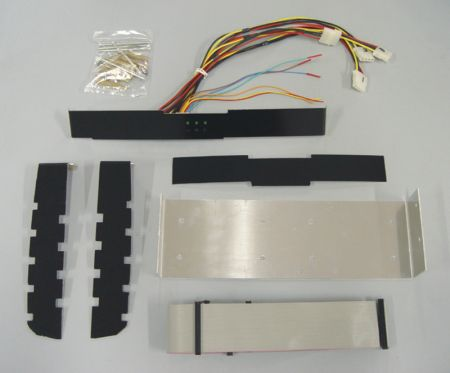
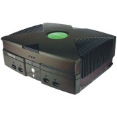

X-TENDER
CASE MOD
This is a complete kit that will allow you convert your Xbox™ into a
mini
rack mount server or media center with activity LED's and expanded
space for 2 internal Hard Drives.

Molded to perfectly integrate with
your Xbox™, this kit comes with a custom front panel, with 3 activity
LED, a custom made hard drive mounting plate to accommodate one or two
additional drives, and a custom molded rear panel. Specially designed

X-Tender rods are included to internally support the expansion,
allowing you to security reassemble the machine. Additional space on
front panel will allow the support of one LCD Display on each side of
the system, or additional LEDs or Cold Cathode Lights. You can switch
between the newly added drives via the buttons at the front.
The kit comes with all parts
you need, including an exhaustive installation guide.
SEE IT HERE